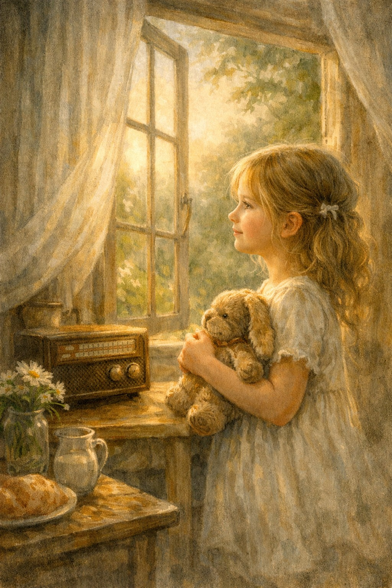

ישנו ריח אחד אשר תמיד חוזר אלי.
כמו צעד רך מאחוריי,
ריח שמזכיר לי ריחות של בית,
בו העולם היה קטן,
מובן מוכר.
מראות נמוגו עם השנים
כמו קו האור על החלון
נוגע בי בלי לגעת.
מאיר סימן שלא נשמר
בלתי נשכח.
ישנו שיר אחד,
לא מפסיק להתנגן
גם כשהרדיו כבוי.
קיים בין הלב לגרון,
מבקש שאקשיב לו שוב ושוב,
זוכר את קסם הרגע.
בעולמי,
הגעגוע יושב על מדרגה גבוהה,
מביט בי בעיניים זורחות.
עם השנים, משנה צורה,
ממשיך ללכת איתי,
להתקיים בעולמי.